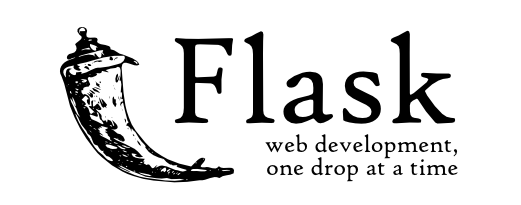

Flask
- Werkzeug: WSGI utility package
- HTML templating language
* WSGI: Protocol that let's a python application talk with a web server. * Microframework philosophy: install what you need one step at a time. No batteries included.
$ conda create --name flask-training -y &&
source activate flask-training &&
conda install flask -y
$ pip freeze > requirements.txt

|__ project
| |__ __init__.py
| |__ static
| |__ templates
| |__ views.py
|__ requirements.txt
|__ run.py
from flask import Flask
app = Flask(__name__)
app.config['DEBUG'] = True
from project.views import app
.wrapper {
padding-top: 50px;
}
from project import app
@app.route('/')
def index():
return 'Hello world'
from project import app
if __name__ == '__main__':
app.run()
$ python run.py
$ git init
$ vi .gitignore
> __pycache__/
> .idea/
$ git add . && git commit -m 'hello world' &&
git checkout -b templates_init
$ mkdir project/templates &&
touch project/templates/base.html
from project import app
from flask import render_template
import random
@app.route('/')
def index():
enthusiasm = int(random.uniform(2, 8))
return render_template('simple_form.html', enthusiasm=enthusiasm)
$ git add . &&
git commit -m 'templates init' &&
git checkout master &&
git merge --ff-only templates_init &&
git checkout -b config
$ mkdir instance && touch instance/flask.cfg
.idea/
__pycache__/
instance/ # I am new
|__ project
| |__ templates
| | |...
| |
|__ instance
| |__flask.cfg
| |...
|__ requirements.txt
|__ run.py
# Set to False in production
DEBUG = True
# needed for csrf protection
SECRET_KEY = 'our-little-secret'
from flask import Flask
app = Flask(__name__)
app.config.from_pyfile('../instance/flask.cfg')
import project.views
from flask import Flask
app = Flask(__name__)
app.config.from_pyfile('../instance/flask.cfg')
import project.views
$ git add . &&
git commit -m 'config file' &&
git checkout master &&
git merge --ff-only config &&
git checkout -b forms

conda install flask-wtf -y &&
pip freeze > requirements.txt
{% extends "base.html" %}
{% from "_form_macros.html" import render_form_field %}
{% block content %}
{% endblock %}
{% macro render_form_field(form) %}
{{ form.label }}:
{% if 'FileField' in form.__repr__() %}
{% else %}
{{ form(class_="form-control", **kwargs)|safe }}
{% endif %}
{% if form.errors %}
{% for error in form.errors %}
{{ error }}
{% endfor %}
{% endif %}
{% endmacro %}
(And make sure that the app still works as expected)
|___instance/
|__ project/
| |__ __init__.py
| |__ static/
| |__ templates/
| |__ classifier/
| | |__ views.py
| | |__ forms.py
| |
| |__ users/
| | |__ views.py
| | |__ forms.py
|__ requirements.txt
|__ run.py
|__ .gitignore
project/users/views.py
from flask import Blueprint
bp = Blueprint('users', __name__)
from flask import Blueprint
bp = Blueprint('classifier', __name__,
url_prefix='/classifier')
from flask import Flask
app = Flask(__name__)
app.config.from_pyfile('../instance/flask.cfg')
from project.users.views import bp as users_bp
from project.classifier.views import bp as class_bp
app.register_blueprint(users_bp)
app.register_blueprint(class_bp)
@bp.route('someurl')
def my_func():
pass
project/users/forms.py
from flask_wtf import FlaskForm
from wtforms import StringField
from wtforms.validators import DataRequired
class LoginForm(FlaskForm):
username = StringField('Username', validators=[DataRequired()])
button_value = 'Remember me'
from flask_wtf import FlaskForm
from wtforms import DecimalField
from wtforms.validators import DataRequired
class ClassifierForm(FlaskForm):
sepal_length = DecimalField('Sepal length', validators=[DataRequired()])
sepal_width = DecimalField('Sepal width', validators=[DataRequired()])
petal_length = DecimalField('Petal length', validators=[DataRequired()])
petal_width = DecimalField('Petal width', validators=[DataRequired()])
button_value = 'Classify'
project/users/views.py
from flask import render_template, Blueprint, flash, session, redirect, url_for, request
from project.users.forms import LoginForm
bp = Blueprint('users', __name__)
@bp.route('/', methods=['GET', 'POST'])
def login():
form = LoginForm()
if form.validate_on_submit(): # request is post
user = form.username.data
flash(f'Welcome {user}', 'info')
session['username'] = user
return redirect(url_for('classifier.index'))
# GET
return render_template('simple_form.html', form=form, url='users.login')
@bp.route('/forget', methods=['POST'])
def expire():
flash(f"{session['username']}, your session has expired.", 'info')
del session['username']
return redirect(url_for('users.login'))
project/classifier/views.py
from flask import render_template, Blueprint, session, redirect, url_for, flash
from project.classifier.forms import ClassifierForm
bp = Blueprint('classifier', __name__, url_prefix='/classifier')
@bp.route('/')
def index():
if 'username' not in session:
flash('Hi, please tell us who you are!', 'info')
return redirect(url_for('users.login'))
form = ClassifierForm()
return render_template('simple_form.html', form=form, url='classifier.index')
$ git add . &&
git commit -m 'forms init' &&
git checkout master &&
git merge --ff-only forms &&
git checkout -b model
project/classifier/views.py
@bp.route('/result', methods=['POST'])
def result():
pass
@bp.route('/show/<flower>')
def show(flower):
# show the flower image
pass
- State in a database! --> SQLAlchemy Object Relational Mapping (ORM) or REDIS (Key Value store)
- Production: Use a production server! For instance Gunicorn with NGINX
- Users: Leave password hashing and other sensitive information to libraries such as Flask-Bcrypt
- Include unit tests
- Error handling
- Client side frameworks such as Vue.js or React.js